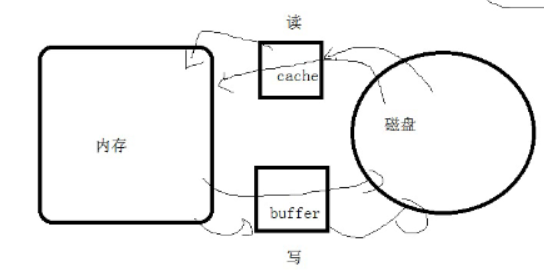
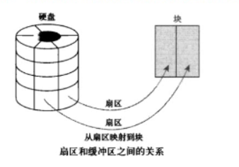

系统性能监控
进程查看命令
1.静态查看进程的信息，某一个时刻进程的信息
ps -l
1
2
3
4
5
6
7[root@LNMP LNMP]# ps -l
F S UID PID PPID C PRI NI ADDR SZ WCHAN TTY TIME CMD
4 S 0 1538 1536 0 80 0 - 28888 do_wai pts/0 00:00:00 bash
4 S 0 1709 1538 0 80 0 - 47939 do_wai pts/0 00:00:00 su
4 S 0 1710 1709 0 80 0 - 28888 do_wai pts/0 00:00:00 bash
0 R 0 1734 1710 0 80 0 - 38302 - pts/0 00:00:00 ps
[root@LNMP LNMP]#参数
F 代表这个程序的旗标 (flag)， 4 代表使用者为 superuser；
S 代表这个程序的状态 (STAT)；
UID 代表执行者身份
PID 进程的ID号！
PPID 父进程的ID；
C CPU使用的资源百分比
PRI指进程的执行优先权(Priority的简写)，其值越小越早被执行；PRI=PRI + NICE 进程的执行优先权(Priority的简写)，其值越小越早被执行；
NI 这个进程的nice值，其表示进程可被执行的优先级的修正数值。
nice 好，对别人友好，其实就是对自己残忍
nice值的范围从-20 ~ 19[root@LNMP ~]# nice -n -10 python
ADDR 这个是内核函数，指出该程序在内存的那个部分。如果是个执行 的程序，一般就是『 - 』
SZ 使用掉的内存大小；
WCHAN 目前这个程序是否正在运作当中，若为 - 表示正在运作；
TTY 登入者的终端机位置；
TIME 使用掉的 CPU 时间。
CMD 所下达的指令名称
ps aux
1
2
3
4
5
6
7
8
9[root@LNMP LNMP]# ps aux
USER PID %CPU %MEM VSZ RSS TTY STAT START TIME COMMAND
root 1 0.0 0.3 125484 3924 ? Ss 16:20 0:01 /usr/lib/systemd/sy
root 2 0.0 0.0 0 0 ? S 16:20 0:00 [kthreadd]
root 3 0.0 0.0 0 0 ? S 16:20 0:00 [ksoftirqd/0]
root 5 0.0 0.0 0 0 ? S< 16:20 0:00 [kworker/0:0H]
root 7 0.0 0.0 0 0 ? S 16:20 0:00 [migration/0]
root 8 0.0 0.0 0 0 ? S 16:20 0:00 [rcu_bh]
root 9 0.0 0.0 0 0 ? R 16:20 0:00 [rcu_sched]参数
USER：该进程属于那个使用者账号。
PID ：该进程的进程ID号。
%CPU：该进程使用掉的 CPU 资源百分比；
%MEM：该进程所占用的物理内存百分比；
VSZ ：该进程使用掉的虚拟内存量 (Kbytes)虚拟内存=真实内存 + swap分区RSS ：该进程占用的固定的内存量 (Kbytes)
真实内存=物理内存 16GTTY ：该进程是在那个终端机上面运作，若与终端机无关，则显示 ?。另外， tty1-tty6 是本机上面的登入者程序，若为 pts/0 等等的，则表示为由网络连接进主机的程序。
ctrl+alt+F1~F6 --->开启tty1到tty6STAT：该程序目前的状态，主要的状态有：
R ：该程序目前正在运作，或者是可被运作； running
S ：该程序目前正在睡眠当中，但可被某些讯号(signal) 唤醒。 sleeping，R（running运行状态）
T ：该程序目前正在侦测或者是停止了；
Z ：该程序应该已经终止，但是其父程序却无法正常的终止他，造成 zombie (疆尸) 程序的状态< high-priority (not nice to other users)
N low-priority (nice to other users)
L has pages locked into memory (for real-time and custom IO)
s is a session leader 下面有子进程
l is multi-threaded (using CLONE_THREAD, like NPTL pthreads do)START：该进程被触发启动的时间；
TIME ：该进程实际使用 CPU 运作的时间。
COMMAND：该程序的实际指令。
2.动态查看进程
top
动态显示系统资源（cpu、内存、进程）
简介
top命令是Linux下常用的性能分析工具，能够实时显示系统中各个进程的资源占用状况，类似于Windows的任务管理器。
top显示系统当前的进程和其他状况,是一个动态显示过程,即可以通过用户按键来不断刷新当前状态.如果在前台执行该命令,它将独占前台,直到用户终止该程序为止. 比较准确的说,top命令提供了实时的对系统处理器的状态监视.它将显示系统中CPU最“敏感”的任务列表.该命令可以按CPU使用.内存使用和执行时间对任务进行排序；而且该命令的很多特性都可以通过交互式命令或者在个人定制文件中进行设定.
下面详细介绍它的使用方法。
参数含义
1
2
3
4
5
6
7
8
9
10
11
12top - 01:06:48 up 1:22, 1 user, load average: 0.06, 0.60, 0.48
Tasks: 29 total, 1 running, 28 sleeping, 0 stopped, 0 zombie
Cpu(s): 0.3% us, 1.0% sy, 0.0% ni, 98.7% id, 0.0% wa, 0.0% hi, 0.0% si
Mem: 191272k total, 173656k used, 17616k free, 22052k buffers
Swap: 192772k total, 0k used, 192772k free, 123988k cached
PID USER PR NI VIRT RES SHR S %CPU %MEM TIME+ COMMAND
1379 root 16 0 7976 2456 1980 S 0.7 1.3 0:11.03 sshd
14704 root 16 0 2128 980 796 R 0.7 0.5 0:02.72 top
1 root 16 0 1992 632 544 S 0.0 0.3 0:00.90 init
2 root 34 19 0 0 0 S 0.0 0.0 0:00.00 ksoftirqd/0
3 root RT 0 0 0 0 S 0.0 0.0 0:00.00 watchdog/0统计信息区前五行是系统整体的统计信息。第一行是任务队列信息，同 uptime 命令的执行结果。其内容如下：
01:06:48 当前时间
up 1:22 系统运行时间，格式为时:分
1 user 当前登录用户数
load average: 0.06, 0.60, 0.48 系统（就绪队列）负载，即任务队列的平均长度，其实就是排队的进程数量。三个数值分别为 1分钟、5分钟、15分钟前到现在的平均值。
1ms 毫秒 = 1000微妙
1微妙 =1000纳秒cpu里的运行速度 纳秒 –》频率 0.5纳秒
内存里的速度 接近纳秒 –》频率 1纳秒
上下文切换 –》10ms –》差一亿倍
当平均值为1的时候，说明cpu已经饱和了
当到达5的时候，说明cpu非常忙碌了1个核心的参考标准 1 饱和了 5 很忙了
4个核心 4~20
8个核心 8~40
第二、三行为进程和CPU的信息。当有多个CPU时，这些内容可能会超过两行。内容如下：
total 进程总数
running 正在运行的进程数
sleeping 睡眠的进程数 在进程中属于ready状态
stopped 停止的进程数
zombie 僵尸进程数
Cpu(s):
0.3% us 用户空间占用CPU百分比 user
1.0% sy 内核空间占用CPU百分比
0.0% ni 用户进程空间内改变过优先级的进程占用CPU百分比 nice
98.7% id 空闲CPU百分比 idle
0.0% wa 等待输入输出的CPU时间百分比
0.0%hi：硬件CPU中断占用百分比
0.0%si：软中断占用百分比
0.0%st：虚拟机占用百分比按数字1 可以查看某个cpu核心的使用情况
最后两行为内存信息。内容如下：
Mem:
191272k total 物理内存总量
173656k used 使用的物理内存总量
17616k free 空闲内存总量
22052k buffers 用作内核缓存的内存量
Swap:
192772k total 交换区总量
0k used 使用的交换区总量
192772k free 空闲交换区总量
123988k cached 缓冲的交换区总量,内存中的内容被换出到交换区，而后又被换入到内存，但使用过的交换区尚未被覆盖，该数值即为这些内容已存在于内存中的交换区的大小,相应的内存再次被换出时可不必再对交换区写入
命令使用
top使用格式top [-] [d] [p] [q] [c] [C] [S] [s] [n]
参数说明
d 指定每两次屏幕信息刷新之间的时间间隔。当然用户可以使用s交互命令来改变之。
p 通过指定监控进程ID来仅仅监控某个进程的状态。
q 该选项将使top没有任何延迟的进行刷新。如果调用程序有超级用户权限，那么top将以尽可能高的优先级运行。
S 指定累计模式
s 使top命令在安全模式中运行。这将去除交互命令所带来的潜在危险。
i 使top不显示任何闲置或者僵死进程。
c 显示整个命令行而不只是显示命令名其他实用命令
下面介绍在top命令执行过程中可以使用的一些交互命令。从使用角度来看，熟练的掌握这些命令比掌握选项还重要一些。这些命令都是单字母的，如果在命令行选项中使用了s选项，则可能其中一些命令会被屏蔽掉。
Ctrl+L 擦除并且重写屏幕。
h或者? 显示帮助画面，给出一些简短的命令总结说明。
k 终止一个进程。系统将提示用户输入需要终止的进程PID，以及需要发送给该进程什么样的信号。一般的终止进程可以使用15信号；如果不能正常结束那就使用信号9强制结束该进程。默认值是信号15。在安全模式中此命令被屏蔽。
i 忽略闲置和僵死进程。这是一个开关式命令。
q 退出程序。
r 重新安排一个进程的优先级别。系统提示用户输入需要改变的进程PID以及需要设置的进程优先级值。输入一个正值将使优先级降低，反之则可以使该进程拥有更高的优先权。默认值是10。
S 切换到累计模式。
s 改变两次刷新之间的延迟时间。系统将提示用户输入新的时间，单位为s。如果有小数，就换算成m s。输入0值则系统将不断刷新，默认值是5 s。需要注意的是如果设置太小的时间，很可能会引起不断刷新，从而根本来不及看清显示的情况，而且系统负载也会大大增加。
f或者F 从当前显示中添加或者删除项目。
o或者O 改变显示项目的顺序。
l 切换显示平均负载和启动时间信息。
m 切换显示内存信息。
t 切换显示进程和CPU状态信息。
c 切换显示命令名称和完整命令行。
M 根据驻留内存大小进行排序。 –>推荐使用
P 根据CPU使用百分比大小进行排序。 —》默认
T 根据时间/累计时间进行排序。
W 将当前设置写入~/.toprc文件中。这是写top配置文件的推荐方法。
h 可以查看top里可以输入哪些字符
< 和 > 移动排序的列 往左 往右附常用操作:
top //每隔5秒显式所有进程的资源占用情况
top -d 2 //每隔2秒显式所有进程的资源占用情况
top -c //每隔5秒显式进程的资源占用情况，并显示进程的命令行参数(默认只有进程名)
top -p 12345 -p 6789//每隔5秒显示pid是12345和pid是6789的两个进程的资源占用情况
top -d 2 -c -p 123456 //每隔2秒显示pid是12345的进程的资源使用情况，并显式该进程启动的命令行参数top -d 2
top -n 1
top -p 7896 -p 5678M –>memory
P –>cpu –>processer
<q 退出
1 显示cpu某个核心的使用情况1
2
3
4
5
6
7
8
9
10
11[root@sanchuang ~]# top -n 1 让top命令刷新1次就退出
top - 10:49:42 up 46 min, 3 users, load average: 0.00, 0.01, 0.05
Tasks: 123 total, 1 running, 122 sleeping, 0 stopped, 0 zombie
%Cpu(s): 0.0 us, 3.1 sy, 0.0 ni, 96.9 id, 0.0 wa, 0.0 hi, 0.0 si, 0.0 st
KiB Mem : 1863252 total, 1158592 free, 445940 used, 258720 buff/cache
KiB Swap: 2097148 total, 2097148 free, 0 used. 1236384 avail Mem
PID USER PR NI VIRT RES SHR S %CPU %MEM TIME+ COMMAND
6299 root 20 0 301040 6484 5112 S 6.2 0.3 0:05.66 vmtoolsd
17147 root 20 0 162020 2188 1576 R 6.2 0.1 0:00.01 top
htop
查看内存大小
free：查看内存的大小
1
2
3
4
5
6
7
8
9
10
11
12
13
14
15
16
17
18
19
20
21
22
23
24
25[root@LNMP LNMP]# free
total used free shared buff/cache available
Mem: 997956 225816 496284 8264 275856 596116
Swap: 2097148 0 2097148
[root@LNMP LNMP]# free -m
total used free shared buff/cache available
Mem: 974 220 484 8 269 582
Swap: 2047 0 2047
[root@LNMP LNMP]#
[root@LNMP LNMP]# free -h
total used free shared buff/cache available
Mem: 974M 220M 484M 8.1M 269M 582M
Swap: 2.0G 0B 2.0G
[root@LNMP LNMP]#
[root@LNMP LNMP]# free -h -s 3
total used free shared buff/cache available
Mem: 974M 220M 484M 8.1M 269M 582M
Swap: 2.0G 0B 2.0G
total used free shared buff/cache available
Mem: 974M 220M 484M 8.1M 269M 582M
Swap: 2.0G 0B 2.0G
total used free shared buff/cache available
Mem: 974M 220M 484M 8.1M 269M 582M有时我们需要持续的观察内存的状况，此时可以使用 -s 选项并指定间隔的秒数：
-h 以人类能读懂的格式显示 hunan readable
-s 间隔时间输出简介
下面先解释一下输出内容：
Mem 行(第二行)是内存的使用情况。memory 内存 ：物理内存 –》速度快，性能好
Swap 行(第三行)是交换空间的使用情况。
swap 交换分区 ：从磁盘里拿出的空间 –》速度慢
当真实内存不足的时候，才会去使用swap分区
total 列显示系统总的可用物理内存和交换空间大小。
used 列显示已经被使用的物理内存和交换空间。
free 列显示还有多少物理内存和交换空间可用使用。
shared 列显示被共享使用的物理内存大小。
buff/cache 列显示被 buffer 和 cache 使用的物理内存大小。
available 列显示还可以被应用程序使用的物理内存大小。
memory 内存 ：物理内存 –》速度快，性能好
swap 交换分区 ：从磁盘里拿出的空间 –》速度慢
当真实内存不足的时候，才会去使用swap分区buff/cache
先来提一个问题： buffer 和 cache 应该是两种类型的内存，但是 free 命令为什么会把它们放在一起呢？要回答这个问题需要我们做些准备工作。让我们先来搞清楚 buffer 与 cache 的含义

buffer 在操作系统中指 buffer cache， 中文一般翻译为 “缓冲区”。要理解缓冲区，必须明确另外两个概念：”扇区” 和 “块”。扇区是设备的最小寻址单元，也叫 “硬扇区” 或 “设备块”。块是操作系统中文件系统的最小寻址单元，也叫 “文件块” 或 “I/O 块”。每个块包含一个或多个扇区，但大小不能超过一个页面，所以一个页可以容纳一个或多个内存中的块。当一个块被调入内存时，它要存储在一个缓冲区中。每个缓冲区与一个块对应，它相当于是磁盘块在内存中的表示(下图来自互联网)：
- 
注意，buffer cache 只有块的概念而没有文件的概念，它只是把磁盘上的块直接搬到内存中而不关心块中究竟存放的是什么格式的文件。
cache 在操作系统中指 page cache，中文一般翻译为 “页高速缓存”。页高速缓存是内核实现的磁盘缓存。它主要用来减少对磁盘的 I/O 操作。具体地讲，是通过把磁盘中的数据缓存到物理内存中，把对磁盘的访问变为对物理内存的访问。页高速缓存缓存的是内存页面。缓存中的页来自对普通文件、块设备文件(这个指的就是 buffer cache 呀)和内存映射文件的读写。
页高速缓存对普通文件的缓存我们可以这样理解：当内核要读一个文件(比如 /etc/hosts)时，它会先检查这个文件的数据是不是已经在页高速缓存中了。如果在，就放弃访问磁盘，直接从内存中读取。这个行为称为缓存命中。如果数据不在缓存中，就是未命中缓存，此时内核就要调度块 I/O 操作从磁盘去读取数据。然后内核将读来的数据放入页高速缓存中。这种缓存的目标是文件系统可以识别的文件(比如 /etc/hosts)。
页高速缓存对块设备文件的缓存就是我们在前面介绍的 buffer cahce。因为独立的磁盘块通过缓冲区也被存入了页高速缓存(缓冲区最终是由页高速缓存来承载的)。到这里我们应该搞清楚了：无论是缓冲区还是页高速缓存，它们的实现方式都是一样的。缓冲区只不过是一种概念上比较特殊的页高速缓存罢了。
那么为什么 free 命令不直接称为 cache 而非要写成 buff/cache？ 这是因为缓冲区和页高速缓存的实现并非天生就是统一的。在 linux 内核 2.4 中才将它们统一。更早的内核中有两个独立的磁盘缓存：页高速缓存和缓冲区高速缓存。前者缓存页面，后者缓存缓冲区。当你知道了这些故事之后，输出中列的名称可能已经不再重要了。
free 与 available
在 free 命令的输出中，有一个 free 列，同时还有一个 available 列。这二者到底有何区别？
free 是真正尚未被使用的物理内存数量。至于 available 就比较有意思了，它是从应用程序的角度看到的可用内存数量。Linux 内核为了提升磁盘操作的性能，会消耗一部分内存去缓存磁盘数据，就是我们介绍的 buffer 和 cache。所以对于内核来说，buffer 和 cache 都属于已经被使用的内存。当应用程序需要内存时，如果没有足够的 free 内存可以用，内核就会从 buffer 和 cache 中回收内存来满足应用程序的请求。所以从应用程序的角度来说，available = free + buffer + cache。请注意，这只是一个很理想的计算方式，实际中的数据往往有较大的误差。交换空间(swap space)
swap space 是磁盘上的一块区域，可以是一个分区，也可以是一个文件。所以具体的实现可以是 swap 分区也可以是 swap 文件。当系统物理内存吃紧时，Linux 会将内存中不常访问的数据保存到 swap 上，这样系统就有更多的物理内存为各个进程服务，而当系统需要访问 swap 上存储的内容时，再将 swap 上的数据加载到内存中，这就是常说的换出和换入。交换空间可以在一定程度上缓解内存不足的情况，但是它需要读写磁盘数据，所以性能不是很高。现在的机器一般都不太缺内存，如果系统默认还是使用了 swap 是不是会拖累系统的性能？理论上是的，但实际上可能性并不是很大。并且内核提供了一个叫做 swappiness 的参数，用于配置需要将内存中不常用的数据移到 swap 中去的紧迫程度。这个参数的取值范围是 0～100，0 告诉内核尽可能的不要将内存数据移到 swap 中，也即只有在迫不得已的情况下才这么做，而 100 告诉内核只要有可能，尽量的将内存中不常访问的数据移到 swap 中。在 ubuntu 系统中，swappiness 的默认值是 60。如果我们觉着内存充足，可以在 /etc/sysctl.conf 文件中设置 swappiness：
- 当物理内存剩余30%的时候，就开始使用swap分区
1
2
3[root@LNMP LNMP]# cat /proc/sys/vm/swappiness
30
[root@LNMP LNMP]#如果我们觉着内存充足，可以在 /etc/sysctl.conf 文件中设置 swappiness：
1
2
3
4
5
6
7
8
9
10
11
12- vm.swappiness=10
sysctl.conf ---》往内核里传递参数的文件
[root@LNMP ~]# echo 0 >/proc/sys/vm/swappiness 临时修改内核的参数
[root@LNMP ~]# cat /proc/sys/vm/swappiness
0
[root@LNMP ~]#
[root@LNMP ~]# cat /etc/sysctl.conf 永久修改内核的参数
- fs.file-max=65535 --》内核允许一个进程可以打开的文件数量
vm.swappiness=0 --》什么时候开始使用swap分区，当物理内存使用完的时候，开始使用
1
2
3
4
5[root@LNMP ~]#
[root@LNMP ~]# sysctl -p 刷新内核里的参数
fs.file-max = 65535
vm.swappiness = 0
[root@LNMP ~]#
查询内核里的内存信息
1
2
3
4
5
6
7
8
9
10
11
12
13
14
15
16
17
18
19
20
21
22
23
24
25
26
27
28
29
30
31
32
33
34
35
36
37
38
39
40
41
42
43
44
45
46[root@LNMP ~]# cat /proc/meminfo 查询内核里的内存的信息
MemTotal: 1863252 kB
MemFree: 71184 kB
MemAvailable: 20724 kB
Buffers: 0 kB
Cached: 22272 kB
SwapCached: 274532 kB
Active: 1197068 kB
Inactive: 447492 kB
Active(anon): 1187036 kB
Inactive(anon): 435344 kB
Active(file): 10032 kB
Inactive(file): 12148 kB
Unevictable: 0 kB
Mlocked: 0 kB
SwapTotal: 2097148 kB
SwapFree: 715772 kB
Dirty: 16 kB
Writeback: 0 kB
AnonPages: 1433672 kB
Mapped: 5048 kB
Shmem: 8 kB
Slab: 72324 kB
SReclaimable: 26452 kB
SUnreclaim: 45872 kB
KernelStack: 4416 kB
PageTables: 12580 kB
NFS_Unstable: 0 kB
Bounce: 0 kB
WritebackTmp: 0 kB
CommitLimit: 3028772 kB
Committed_AS: 3017064 kB
VmallocTotal: 34359738367 kB
VmallocUsed: 182368 kB
VmallocChunk: 34359310332 kB
HardwareCorrupted: 0 kB
AnonHugePages: 2048 kB
CmaTotal: 0 kB
CmaFree: 0 kB
HugePages_Total: 0
HugePages_Free: 0
HugePages_Rsvd: 0
HugePages_Surp: 0
Hugepagesize: 2048 kB
DirectMap4k: 89984 kB
DirectMap2M: 2007040 kB1
2
3
4
5
6
7
8
9
10
11
12
13
14
15
16
17
18
19
20
21
22
23
24
25
26
27
28[root@LNMP LNMP]# lscpu
Architecture: x86_64
CPU op-mode(s): 32-bit, 64-bit
Byte Order: Little Endian
CPU(s): 1
On-line CPU(s) list: 0
Thread(s) per core: 1
Core(s) per socket: 1
座： 1
NUMA 节点： 1
厂商 ID： GenuineIntel
CPU 系列： 6
型号： 158
型号名称： Intel(R) Core(TM) i7-8750H CPU @ 2.20GHz
步进： 10
CPU MHz： 2208.000
CPU max MHz: 0.0000
CPU min MHz: 0.0000
BogoMIPS： 4416.00
超管理器厂商： VMware
虚拟化类型： 完全
L1d 缓存： 32K
L1i 缓存： 32K
L2 缓存： 256K
L3 缓存： 9216K
NUMA 节点0 CPU： 0
Flags: fpu vme de pse tsc msr pae mce cx8 apic sep mtrr pge mca cmov pat pse36 clflush dts mmx fxsr sse sse2 ss syscall nx pdpe1gb rdtscp lm constant_tsc arch_perfmon pebs bts nopl xtopology tsc_reliable nonstop_tsc aperfmperf eagerfpu pni pclmulqdq ssse3 fma cx16 pcid sse4_1 sse4_2 x2apic movbe popcnt tsc_deadline_timer aes xsave avx f16c rdrand hypervisor lahf_lm abm 3dnowprefetch epb fsgsbase tsc_adjust bmi1 avx2 smep bmi2 invpcid rdseed adx smap xsaveopt dtherm ida arat pln pts hwp hwp_notify hwp_act_window hwp_epp
[root@LNMP LNMP]#
dstat
与许多命令一样，dstat命令有默认选项，执行dstat命令不加任何参数，它默认会收集-cpu-、-disk-、-net-、－paging-、-system-的数据，一秒钟收集一次。 默认输入 dstat 等于输入了dstat -cdngy 1或dstat -a 1。
1
2
3
4
5
6
7
8
9
10
11[root@LNMP LNMP]# dstat
You did not select any stats, using -cdngy by default.
----total-cpu-usage---- -dsk/total- -net/total- ---paging-- ---system--
usr sys idl wai hiq siq| read writ| recv send| in out | int csw
0 0 99 1 0 0| 51k 47k| 0 0 | 0 0 | 128 191
1 0 99 0 0 0| 0 0 | 240B 934B| 0 0 | 121 153
0 1 99 0 0 0| 0 0 | 60B 338B| 0 0 | 126 154
0 0 100 0 0 0| 0 0 | 60B 338B| 0 0 | 114 153
0 0 100 0 0 0| 0 0 | 287B 338B| 0 0 | 123 153
0 0 100 0 0 0| 0 4096B| 120B 338B| 0 0 | 102 152
0 0 100 0 0 0| 0 0 | 240B 346B| 0 0 | 114 153直接跟数字，表示#秒收集一次数据，默认为一秒；dstat 5表示5秒更新一次
-c,–cpu 统计CPU状态，包括 user, system, idle（空闲等待时间百分比）, wait（等待磁盘IO）, hardware interrupt（硬件中断）, software interrupt（软件中断）等；
-d, –disk 统计磁盘读写状态
-D total,sda 统计指定磁盘或汇总信息
-l, –load 统计系统负载情况，包括1分钟、5分钟、15分钟平均值
-m, –mem 统计系统物理内存使用情况，包括used, buffers, cache, free
-s, –swap 统计swap已使用和剩余量
-n, –net 统计网络使用情况，包括接收和发送数据
-N eth1,total 统计eth1接口汇总流量
-r, –io 统计I/O请求，包括读写请求
-p, –proc 统计进程信息，包括runnable、uninterruptible、new
-y, –sys 统计系统信息，包括中断、上下文切换
-t 显示统计时时间，对分析历史数据非常有用
–fs 统计文件打开数和inodes数
以上这些就是最常用的选项，而一般都组合使用，个人比较常用的是：
1
2
3[root@sanchuang yum.repos.d]# dstat -ma
[root@sanchuang yum.repos.d]# dstat -N ens33,lo，ens37 查看多块网卡的流量
查看端口
查看流量